Lectures in this section
Each lecture links to the notes that cover it. This is the largest ingestion-domain section — the worked pipeline scenario is the most exam-like content here.
- AWS Step Functions: state machines, states and workflow types ~14:00 Slides 509–516
- Amazon EventBridge: event bus, rules and schema registry ~10:00 Slides 517–524
- Worked scenario: automating a retail data lake pipeline ~12:00 Slides 525–532
- Amazon AppFlow: SaaS connectors and bi-directional sync ~6:00 Slides 533–538
- Amazon MWAA: managed Airflow and DAG layout ~6:00 Slides 539–541
- Amazon SNS: pub/sub, fan-out and FIFO topics ~8:00 Slides 542–547
- Amazon SQS: queues, lifecycle and Standard vs FIFO ~8:00 Slides 548–553
- Amazon API Gateway: REST, HTTP, WebSocket and endpoint types ~8:00 Slides 554–559
- Orchestration decision table ~5:00
AWS Step Functions
AWS Step Functions is a serverless orchestration service. You define a state machine — a visual workflow — that coordinates Lambda functions, Glue jobs, SNS notifications and 220+ other AWS services, with built-in error handling, retries and branching.
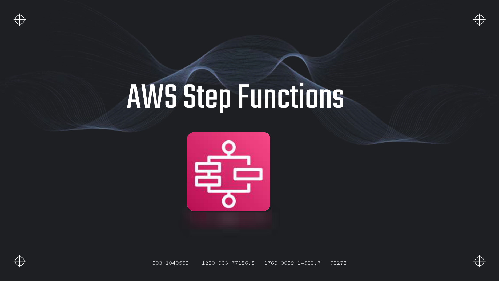
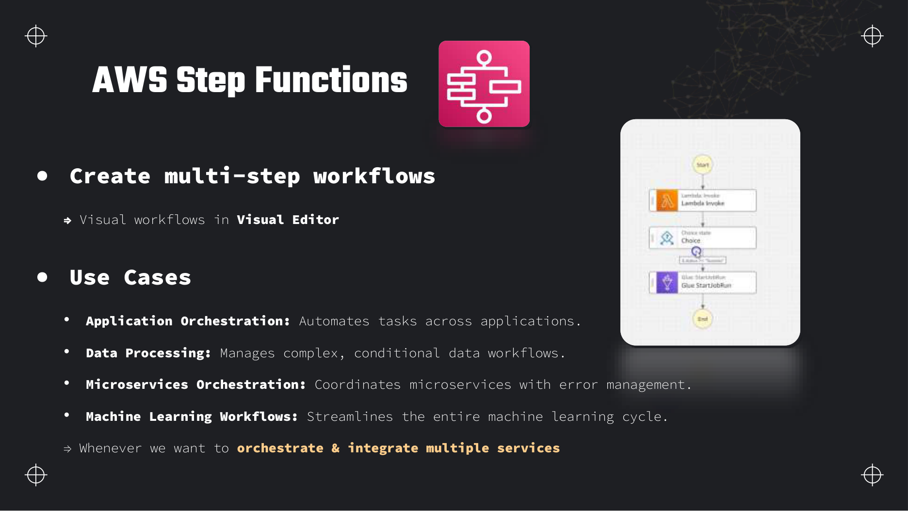
State machine terminology
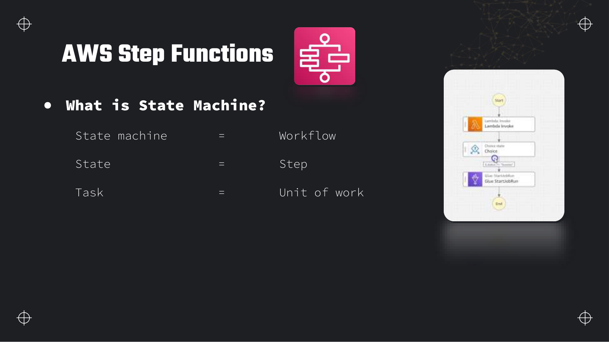
State types
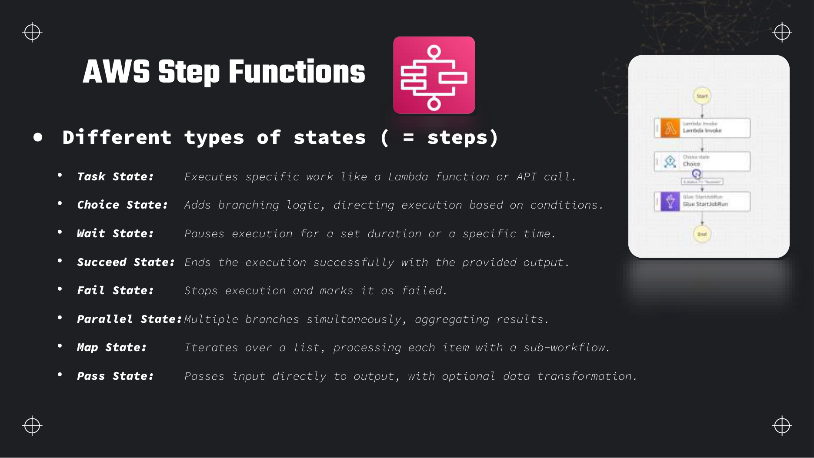
| State | What it does | Pipeline example |
|---|---|---|
| Task | Runs one unit of work — Lambda, Glue, SNS publish, SDK call | Invoke validation Lambda; start Glue ETL job |
| Choice | Branches on JSONPath conditions | If validation passes → ETL; else → Fail |
| Wait | Pauses for seconds or until a timestamp | Wait 60 s for crawler to finish before next step |
| Parallel | Runs branches concurrently, aggregates output | Validate and enrich datasets simultaneously |
| Map | Iterates over an array — each item runs a sub-workflow | Process each S3 prefix in a list; Distributed Map scales to millions of S3 objects |
| Pass | Transforms input to output without calling a service | Inject static parameters before a Glue job |
| Succeed / Fail | Terminal states | End workflow cleanly or mark failure for CloudWatch alarm |
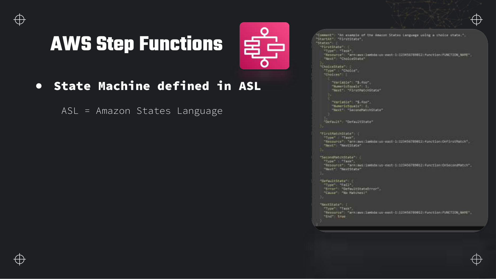
Error handling, retries and integrations
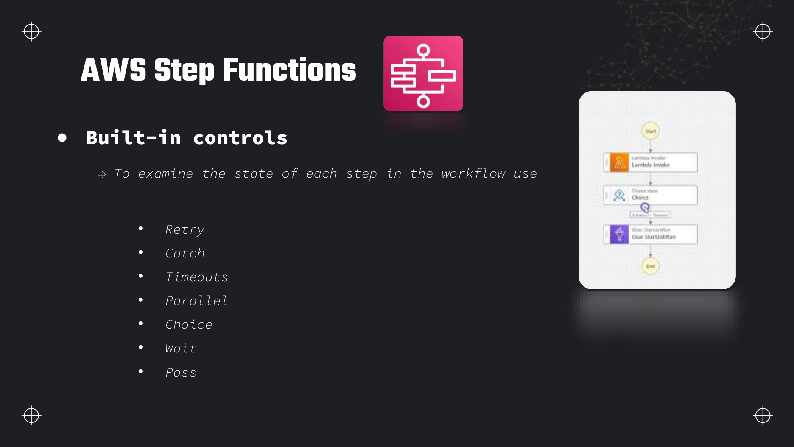
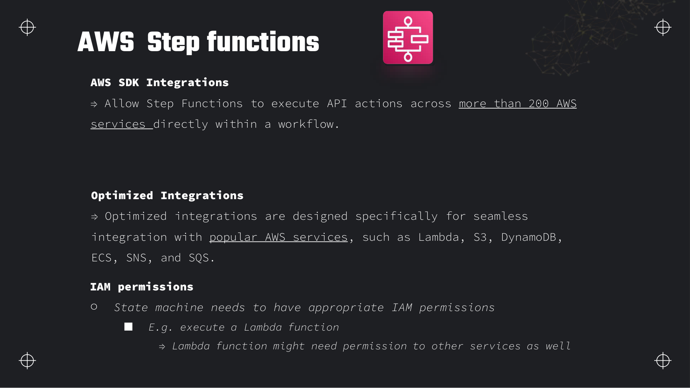
.sync pattern — Step Functions waits until the job completes. AWS SDK integrations call any of 200+ services via the AWS SDK integration pattern..sync pattern. For Glue, use arn:aws:states:::glue:startJobRun.sync — Step Functions polls until the job succeeds or fails, then proceeds. Without .sync, the workflow continues immediately after starting the job, which is almost never what a data pipeline wants.Standard vs Express workflows
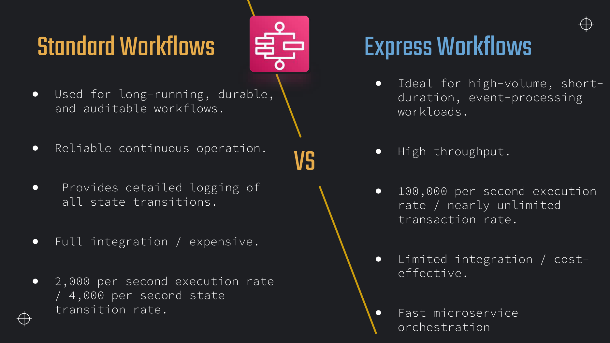
| Feature | Standard | Express |
|---|---|---|
| Max duration | Up to 1 year | Up to 5 minutes |
| Execution rate | 2,000 starts/sec (soft limit) | 100,000+ starts/sec |
| State transition rate | 4,000/sec | Nearly unlimited |
| Execution history | Full history in console; auditable | Not retained by default (CloudWatch Logs optional) |
| Pricing model | Per state transition — higher cost | Per execution + duration — cost-effective at volume |
| Integration depth | Full — all state types, .sync, Map, Parallel | Limited — fewer state types; ideal for Lambda chains |
| Delivery semantics | Exactly-once workflow execution | At-least-once — design tasks to be idempotent |
| Typical use case | Long ETL pipelines, human approval steps, audit trails | High-volume event processing, microservice orchestration |
Map state and distributed map
The Map state iterates over a JSON array — each element runs an inline or referenced sub-workflow. For large-scale S3 fan-out (process every object in a bucket), Distributed Map reads an S3 inventory or CSV manifest and launches up to tens of thousands of concurrent sub-executions, billing only for what runs. This is the Step Functions answer when a question mentions "process millions of files in parallel".
Amazon EventBridge
Amazon EventBridge is a serverless event bus. Producers publish JSON events; rules match event patterns or schedules and route copies to targets — Lambda, Step Functions, SNS, SQS, API destinations — without the producer knowing the consumer exists.
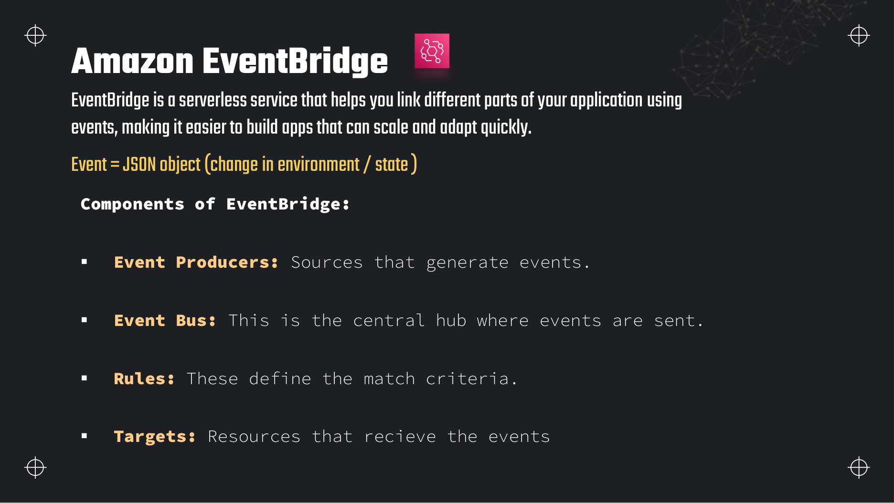
source, detail-type and detail fields. Rules filter on any of these.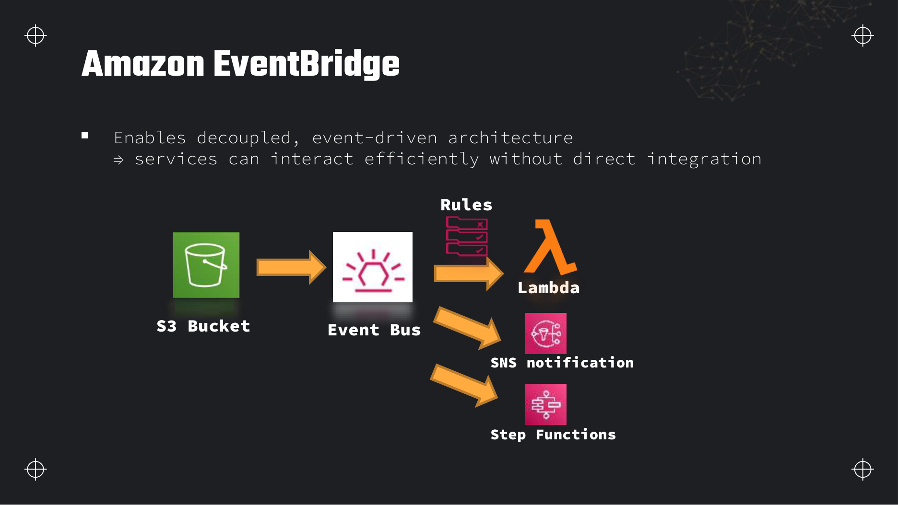
Object Created events to the default bus; a rule forwards matching events to Step Functions — the pattern used in the worked pipeline scenario below.Rules: event pattern vs schedule
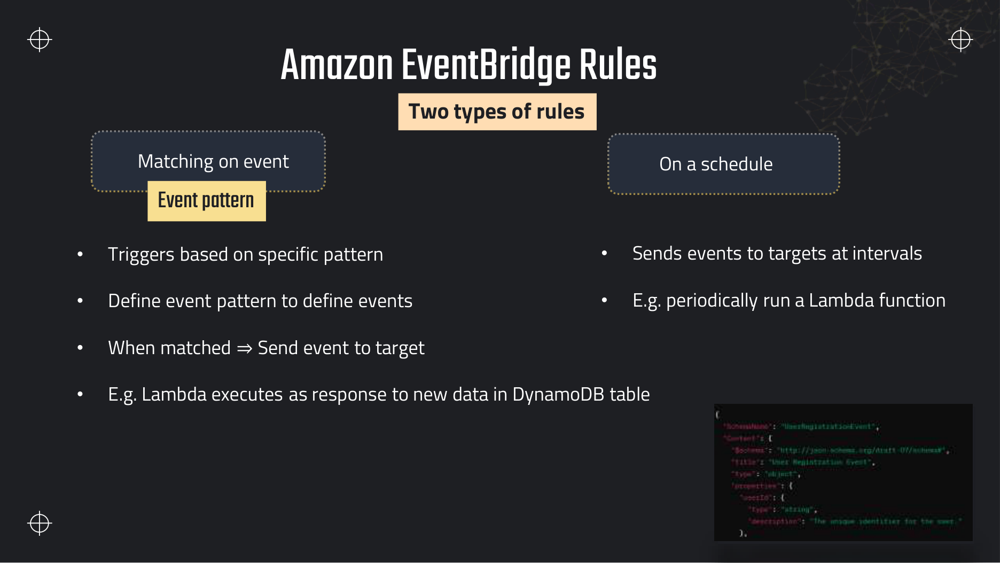
{
"source": ["aws.s3"],
"detail-type": ["Object Created"],
"detail": {
"bucket": { "name": ["dea-lab-ab-4821"] },
"object": { "key": [{ "prefix": "raw/sales/" }] }
}
}Event bus types
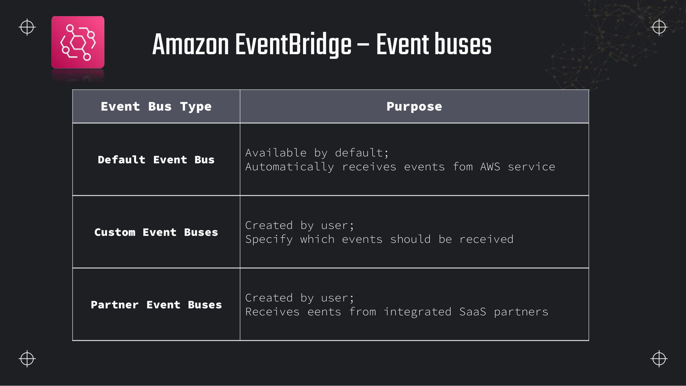
Schema Registry
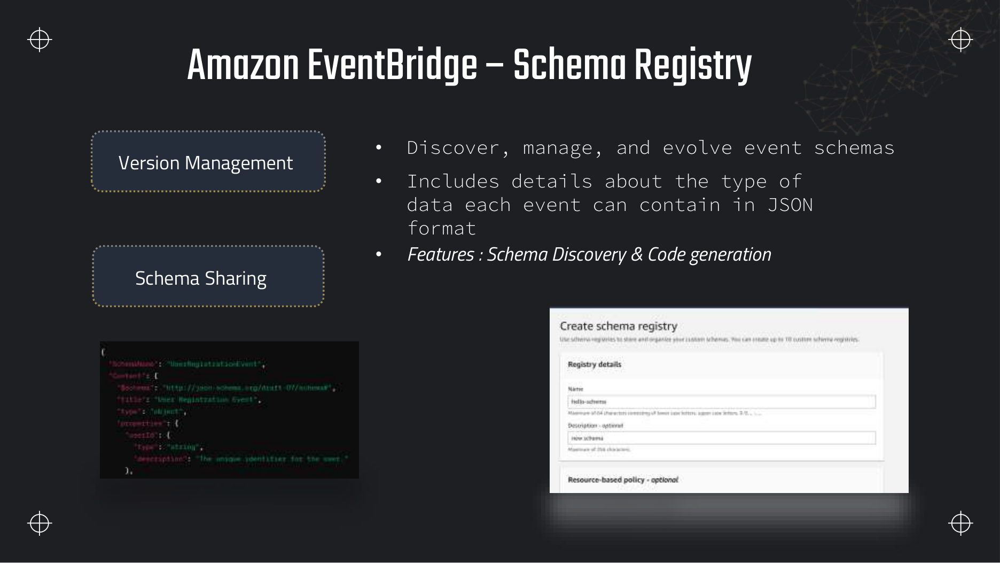
Cross-account access and resource-based policies
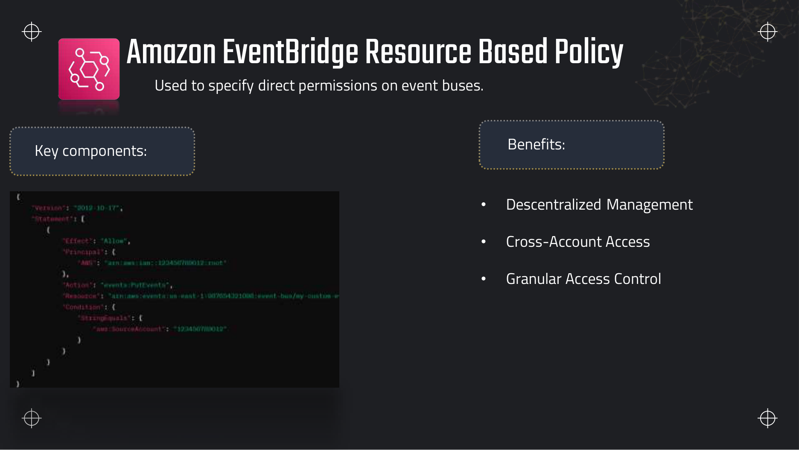
events:PutEvents. Combine with IAM on the sender side for defence in depth — common in multi-account data lake setups.EventBridge Pipes and archive/replay
EventBridge Pipes connect a single source (SQS, Kinesis, DynamoDB stream) to a target with optional filtering and enrichment — a point-to-point alternative to bus + rule when you do not need fan-out. Archive and replay stores matched events for up to 90 days and lets you re-drive them through the bus — invaluable for reprocessing a bad batch without re-uploading source files.
Worked scenario: automating a retail data lake
The deck walks through a complete pipeline: daily retail CSV files land in S3, EventBridge triggers a Step Functions workflow, a Lambda function validates headers, a Choice state branches on the result, and a Glue ETL job transforms passing files. This is the shape of a typical DEA-C01 scenario question.
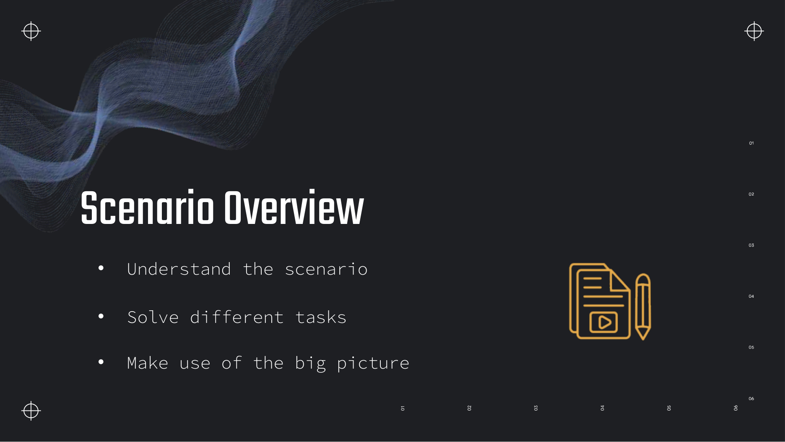
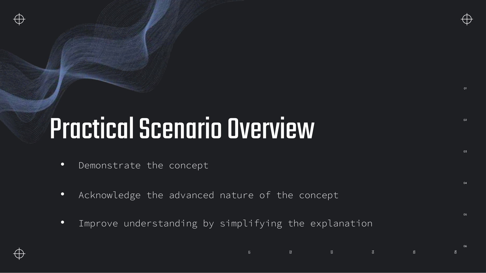
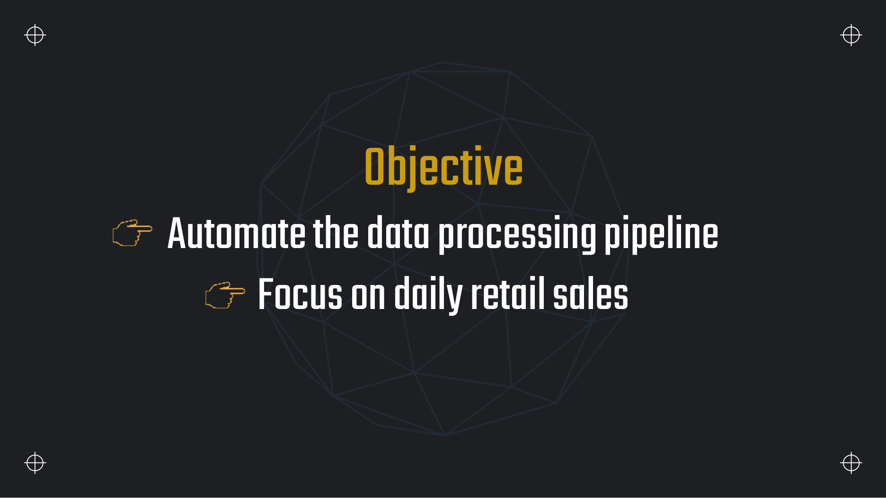
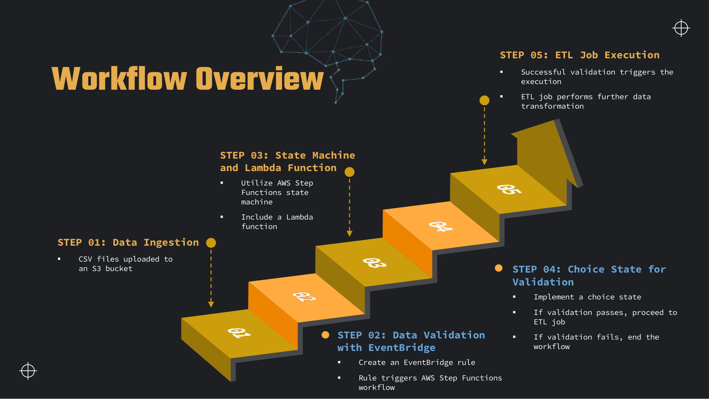
Event-driven retail pipeline (animated flow)
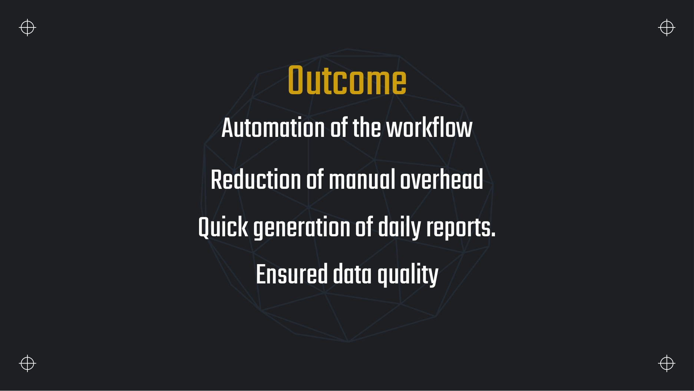
Lambda validation function
The validation Lambda reads the S3 object key from the Step Functions input, downloads the first line of the CSV, and checks that expected header names (order_id, product_id, quantity, price, date) are present. It returns { "valid": true } or { "valid": false, "reason": "..." } for the Choice state.
{
"Comment": "Retail sales pipeline — validate then ETL",
"StartAt": "ValidateHeaders",
"States": {
"ValidateHeaders": {
"Type": "Task",
"Resource": "arn:aws:states:::lambda:invoke",
"Parameters": {
"FunctionName": "sales-csv-validator",
"Payload.$": "$"
},
"ResultSelector": { "valid.$": "$.Payload.valid", "reason.$": "$.Payload.reason" },
"ResultPath": "$.validation",
"Next": "CheckValidation"
},
"CheckValidation": {
"Type": "Choice",
"Choices": [
{
"Variable": "$.validation.valid",
"BooleanEquals": true,
"Next": "RunCrawler"
}
],
"Default": "NotifyValidationFailure"
},
"RunCrawler": {
"Type": "Task",
"Resource": "arn:aws:states:::aws-sdk:glue:startCrawler",
"Parameters": { "Name": "sales-raw-crawler" },
"Next": "RunEtlJob",
"Retry": [{ "ErrorEquals": ["Glue.CrawlerRunningException"], "IntervalSeconds": 30, "MaxAttempts": 5 }]
},
"RunEtlJob": {
"Type": "Task",
"Resource": "arn:aws:states:::glue:startJobRun.sync",
"Parameters": { "JobName": "sales-daily-etl" },
"ResultPath": "$.etlResult",
"Next": "NotifySuccess",
"Catch": [{ "ErrorEquals": ["States.ALL"], "Next": "NotifyEtlFailure", "ResultPath": "$.error" }]
},
"NotifySuccess": {
"Type": "Task",
"Resource": "arn:aws:states:::sns:publish",
"Parameters": {
"TopicArn": "arn:aws:sns:us-east-1:123456789012:sales-pipeline-alerts",
"Message": "Daily sales ETL completed successfully"
},
"End": true
},
"NotifyValidationFailure": {
"Type": "Task",
"Resource": "arn:aws:states:::sns:publish",
"Parameters": {
"TopicArn": "arn:aws:sns:us-east-1:123456789012:sales-pipeline-alerts",
"Message.$": "States.Format('Validation failed: {}', $.validation.reason)"
},
"Next": "ValidationFailed"
},
"NotifyEtlFailure": {
"Type": "Task",
"Resource": "arn:aws:states:::sns:publish",
"Parameters": {
"TopicArn": "arn:aws:sns:us-east-1:123456789012:sales-pipeline-alerts",
"Message": "ETL job failed — check Glue logs"
},
"Next": "EtlFailed"
},
"ValidationFailed": { "Type": "Fail", "Cause": "CSV header validation failed" },
"EtlFailed": { "Type": "Fail", "Cause": "Glue ETL job failed" }
}
}Amazon AppFlow
Amazon AppFlow is a fully managed SaaS integration service. It moves data between applications like Salesforce, SAP, Slack and Snowflake and AWS services like S3, Redshift and Salesforce — with a no-code UI, field mapping, encryption and event-driven triggers.
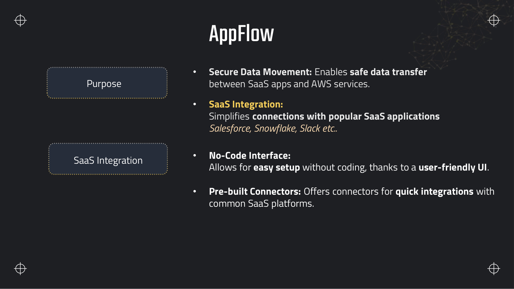
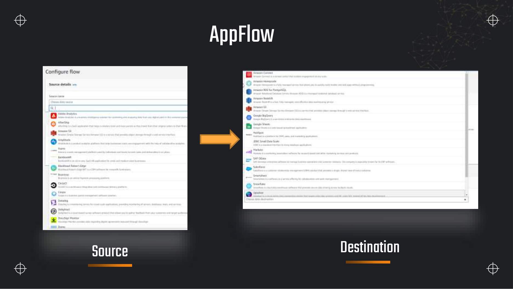
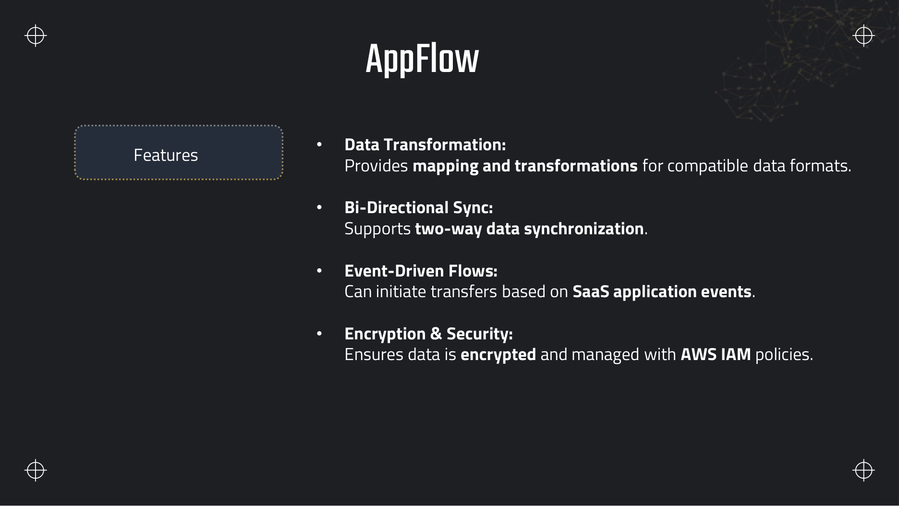
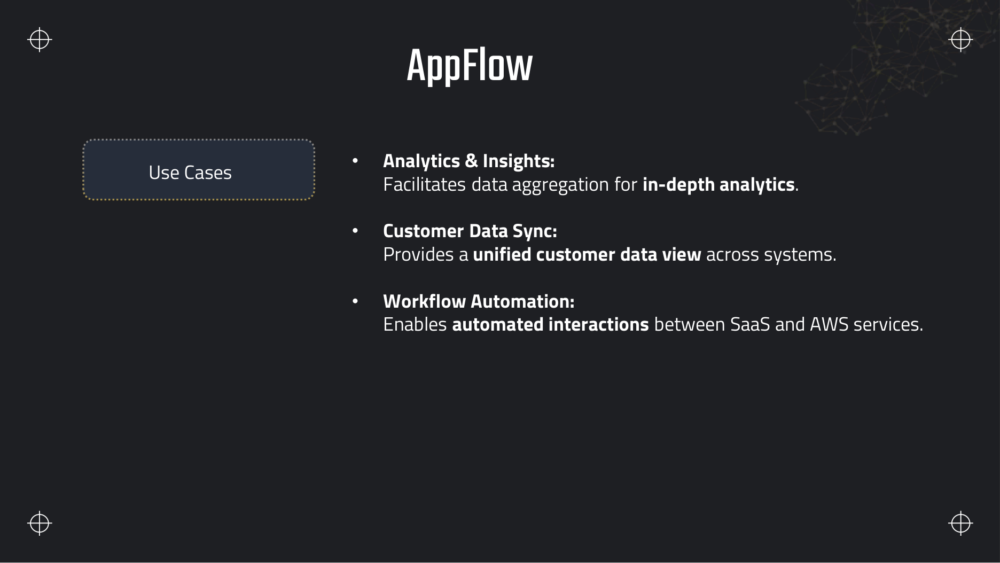
Amazon MWAA
Amazon Managed Workflows for Apache Airflow (MWAA) runs open-source Airflow without you managing the scheduler, workers or web server. You upload DAGs in Python to S3; MWAA picks them up and executes tasks on a schedule or trigger.
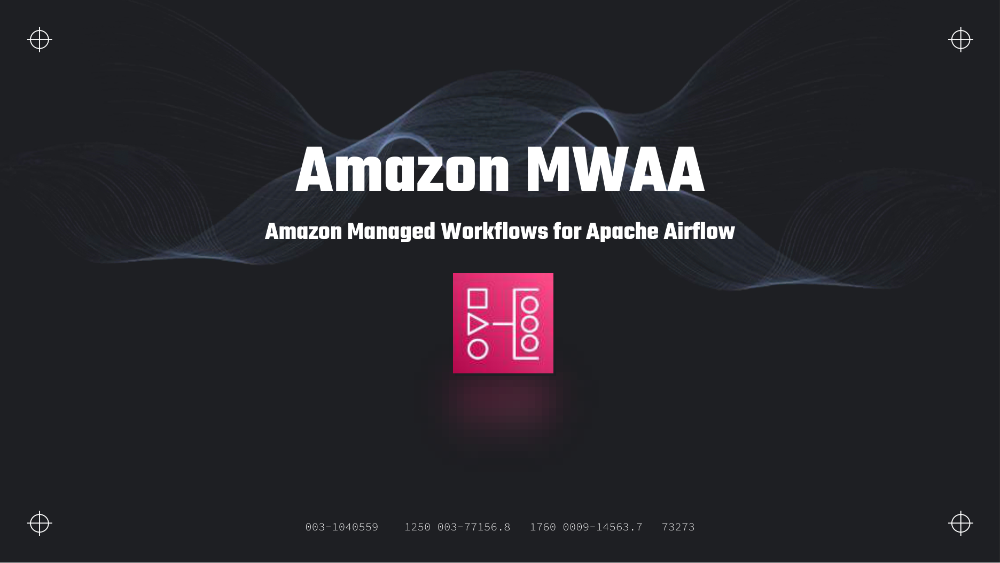
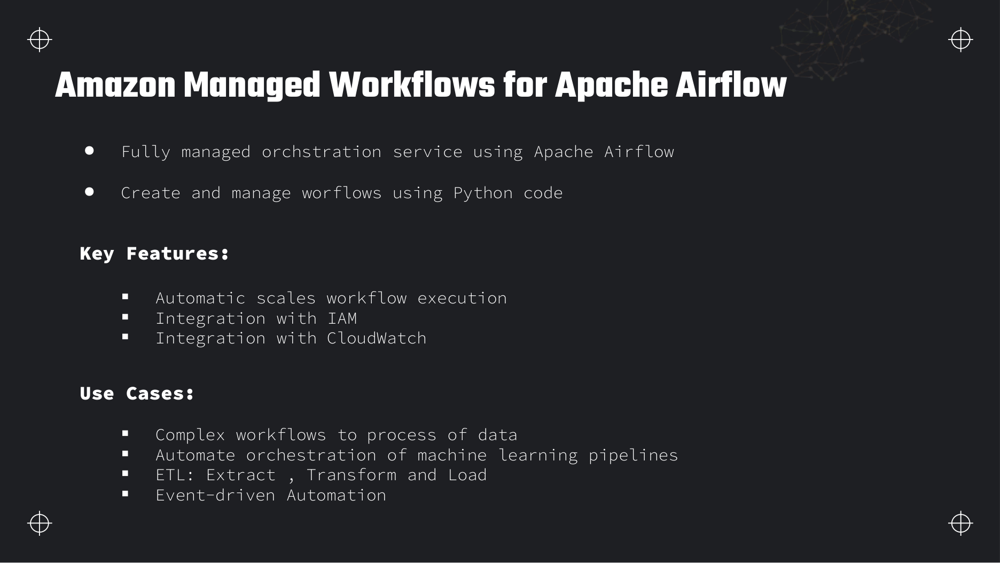
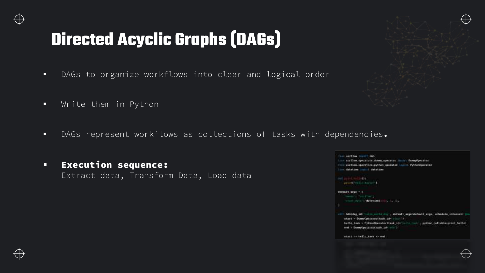
S3 bucket layout for MWAA
dags/— Python DAG files. MWAA syncs this prefix continuously.plugins.zip— custom Airflow plugins (operators, hooks, sensors).requirements.txt— additional Python packages installed on workers.
Environment classes
MWAA environments come in sizes (mw1.small, mw1.medium, mw1.large) that control scheduler and worker capacity. Larger environments run more concurrent tasks. Billing is per environment-hour plus worker usage.
Amazon SNS
Amazon Simple Notification Service (SNS) is a fully managed pub/sub messaging service. Publishers send messages to a topic; SNS pushes copies to every subscribed endpoint — SQS queues, Lambda functions, HTTP/S endpoints, email, SMS and mobile push.
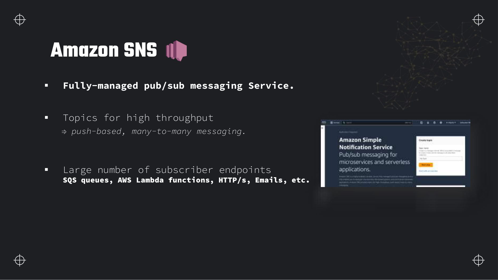
Standard vs FIFO topics
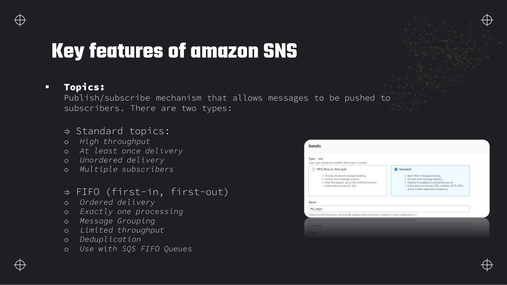
A2A vs A2P messaging
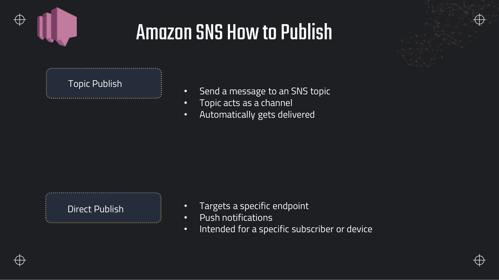
SNS-to-SQS fan-out
SNS fan-out to multiple SQS queues
{
"Version": "2012-10-17",
"Statement": [{
"Sid": "AllowSNSToSend",
"Effect": "Allow",
"Principal": { "Service": "sns.amazonaws.com" },
"Action": "sqs:SendMessage",
"Resource": "arn:aws:sqs:us-east-1:123456789012:analytics-queue",
"Condition": {
"ArnEquals": {
"aws:SourceArn": "arn:aws:sns:us-east-1:123456789012:sales-events"
}
}
}]
}Amazon SQS
Amazon Simple Queue Service (SQS) is a fully managed message queuing service. Producers send messages to a queue; consumers poll, process and explicitly delete. SQS decouples components so a slow consumer never blocks the producer.
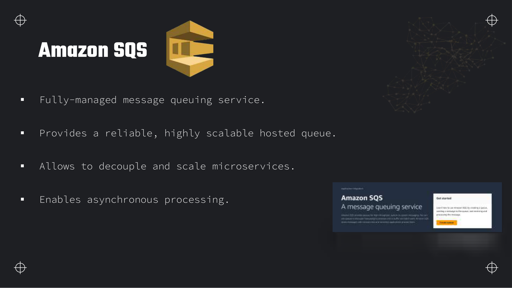
Message lifecycle
Visibility timeout, long polling and DLQ
- Visibility timeout: After a consumer receives a message, it is hidden for this period (default 30 s, max 12 hours). Set it longer than your processing time.
- Long polling:
WaitTimeSecondsup to 20 — reduces empty responses and cost vs short polling in a tight loop. - Dead-letter queue (DLQ): After
maxReceiveCountfailed processing attempts, the message moves to a DLQ for inspection — essential for poison-pill handling. - Extended client: Payloads over 256 KB store the body in S3; the SQS message carries an S3 pointer. The open-source Amazon SQS Extended Client Library handles this transparently.
Standard vs FIFO queues
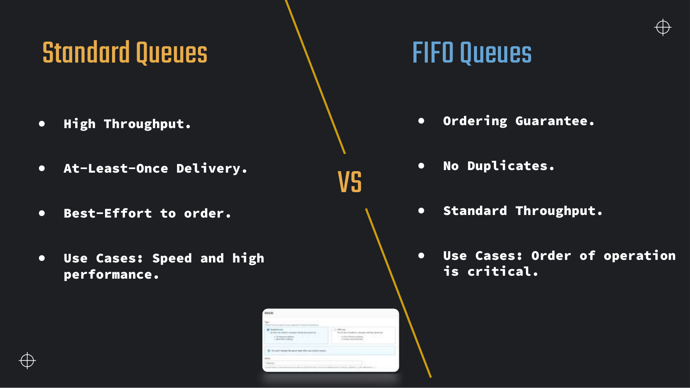
| Feature | Standard | FIFO |
|---|---|---|
| Ordering | Best-effort (no guarantee) | Strict FIFO within a message group |
| Throughput | Nearly unlimited | 300 msg/sec per API (3,000 with batching) |
| Deduplication | None — duplicates possible | Content-based or deduplication ID — no duplicates in a 5-minute window |
| Delivery guarantee | At-least-once | Exactly-once processing |
| Queue name | Any name | Must end in .fifo |
| Use case | High throughput, order irrelevant — log ingestion, image processing | Order critical — financial transactions, inventory updates |
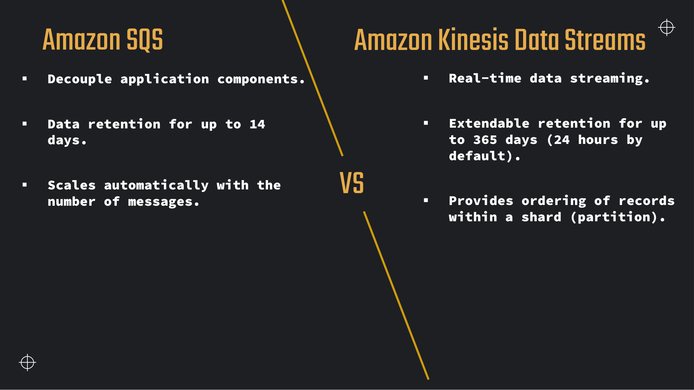
import boto3
sqs = boto3.client("sqs", region_name="us-east-1")
queue_url = "https://sqs.us-east-1.amazonaws.com/123456789012/analytics-queue"
while True:
resp = sqs.receive_message(
QueueUrl=queue_url,
MaxNumberOfMessages=10,
WaitTimeSeconds=20, # long polling
VisibilityTimeout=60,
)
for msg in resp.get("Messages", []):
body = msg["Body"]
receipt_handle = msg["ReceiptHandle"]
try:
process(body) # your business logic
sqs.delete_message(QueueUrl=queue_url, ReceiptHandle=receipt_handle)
except Exception:
pass # message reappears after visibility timeoutAmazon API Gateway
Amazon API Gateway is a fully managed service for creating, publishing and securing HTTP APIs at scale. It sits in front of Lambda, HTTP backends, AWS services and mock integrations — handling authentication, throttling, caching and usage plans.
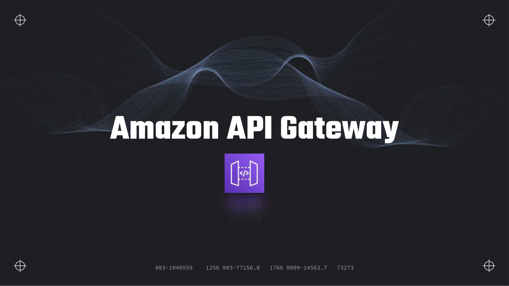
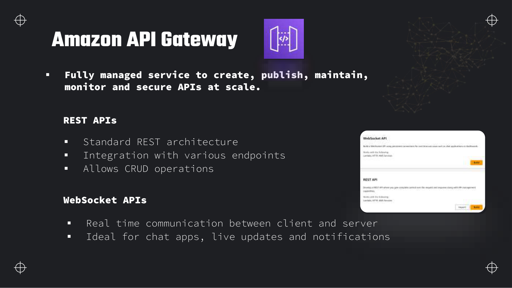
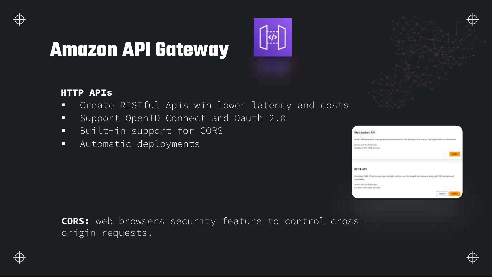
Integration types
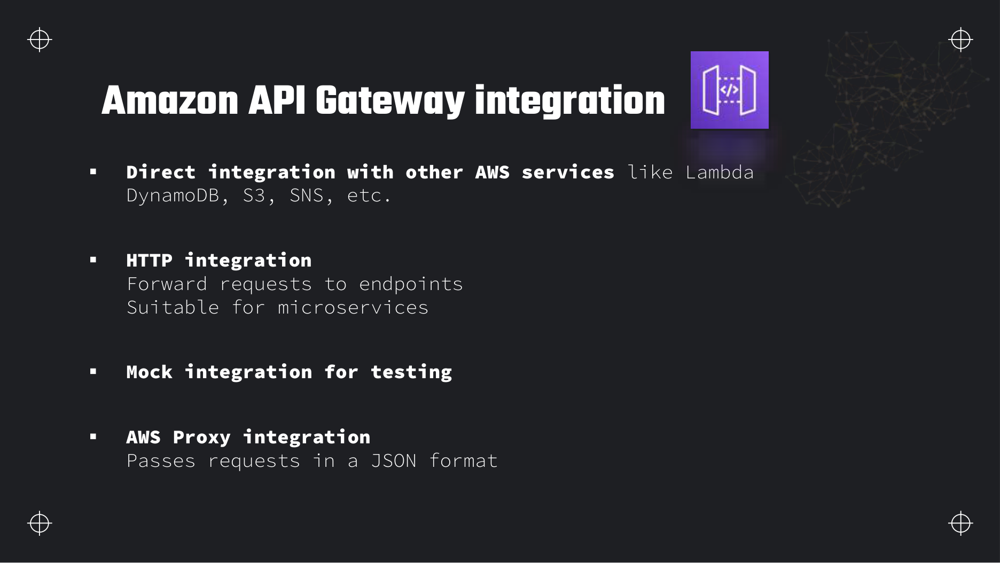
Throttling, quotas and usage plans
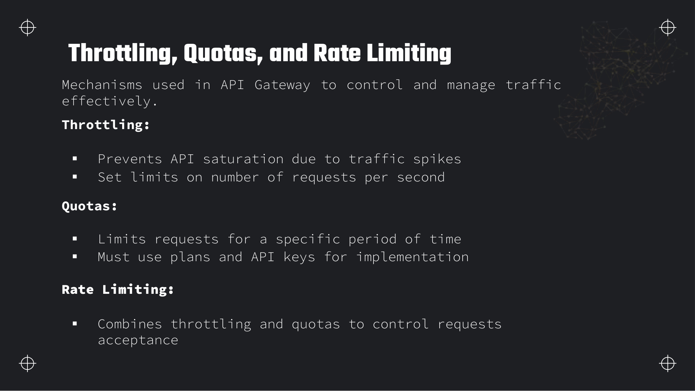
API caching
REST and HTTP APIs can cache responses at the stage level. Enable caching on a stage, set a cache cluster size (0.5 GB to 237 GB), and mark method-level cache keys — API Gateway returns cached responses for identical requests without invoking the backend. Default TTL is 300 seconds (max 3,600). Edge-optimised endpoints cache at CloudFront edge locations; regional endpoints cache within the region. Use caching when the same read-heavy query (e.g. a dashboard API over curated data) is requested repeatedly — it reduces Lambda invocations and backend load. Do not cache responses that vary per user unless the cache key includes the authorisation header or a user-specific path parameter.
Endpoint types
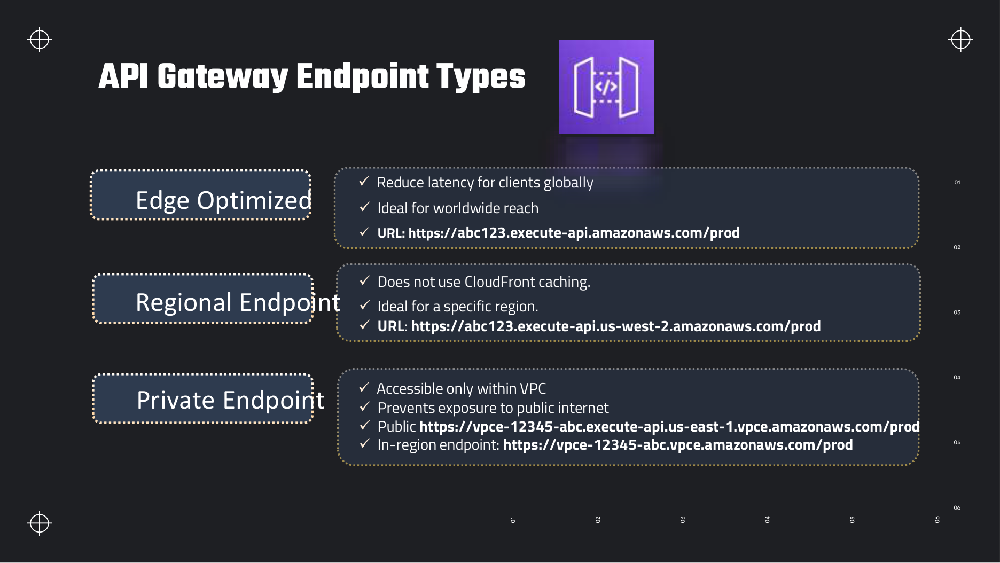
| Endpoint type | URL pattern | Best for |
|---|---|---|
| Edge-optimised | abc123.execute-api.amazonaws.com | Global clients; CloudFront caches responses |
| Regional | abc123.execute-api.us-west-2.amazonaws.com | Same-region clients; you manage your own CloudFront if needed |
| Private | vpce-…execute-api…amazonaws.com | Internal microservices inside a VPC only |
Orchestration decision table
The exam repeatedly asks which orchestrator fits a scenario. Use this table as your tie-breaker — the qualifier in the question (least operational overhead, complex dependencies, event-driven) picks the row.
| Orchestrator | Good at | Cost model | Visibility / retry | Ops overhead |
|---|---|---|---|---|
| Step Functions | Visual ASL workflows, error handling, .sync on Glue/Lambda, human approval, audit trail |
Per state transition (Standard) or per execution + duration (Express) | Full execution history; built-in Retry/Catch | Low — serverless |
| EventBridge | Event routing, filtering, scheduling, fan-out to many targets, cross-account, archive/replay | Per million events published | CloudWatch metrics per rule; no built-in retry on targets (use DLQ on SQS target) | Lowest — no workflow state |
| MWAA (Airflow) | Complex Python DAGs, backfill, SLA sensors, hundreds of interdependent tasks, ML pipelines | Per environment-hour + worker capacity | Airflow UI with task logs; retries configured per task | Medium — managed but you maintain DAGs, plugins, requirements |
| Glue Workflows | Sequences of Glue crawlers, jobs and triggers — all Glue, nothing else | Glue DPU-hours only | Glue console workflow graph; job-level retries | Low — when every step is already Glue |
| Lambda chaining | Two or three simple steps, no branching, low volume | Per invocation + duration | CloudWatch Logs per function; manual retry logic | Low initially; becomes unmaintainable beyond ~3 steps |
.sync (orchestration → transform). MWAA DAG invokes Glue operators (Python-native ETL schedule). Do not chain more than three Lambdas when Step Functions is available.Deeper detail and exam edge cases
Billing meters, hard limits, and integration traps for Step Functions, EventBridge, messaging, and API front doors — the operational detail scenario questions assume when they say "least operational overhead" or "exactly-once".
Limits and quotas that decide answers
| Limit | Value | Adjustable? | Why it matters |
|---|---|---|---|
| Step Functions Standard max duration | 1 year | No (hard) | Long ETL with Glue .sync and human approval → Standard. |
| Step Functions Express max duration | 5 minutes | No (hard) | High-volume sub-five-minute chains; cannot wrap a long Glue job. |
| Step Functions execution payload | 256 KB state input/output per transition | Workaround — store large data in S3, pass pointer in state | Passing full CSV contents in JSON fails; use S3 keys. |
| Step Functions Standard delivery | Exactly-once workflow execution | N/A (semantics) | Retries do not double-charge side effects if tasks are idempotent. |
| Step Functions Express delivery | At-least-once — tasks may run more than once | N/A | Design Express steps idempotent; duplicates on retry. |
| Map state concurrency | Inline Map up to 40 concurrent iterations (default); Distributed Map scales to tens of thousands | Yes — set MaxConcurrency | "Millions of S3 objects" → Distributed Map with inventory manifest. |
| EventBridge event size | 256 KB per event | No (hard) | Large payloads go in S3; event carries metadata only. |
| EventBridge failed delivery retry | Up to 24 hours with exponential backoff | Configure DLQ on target | After retry window, events go to DLQ or drop — set DLQ for audit. |
| SQS message size | 256 KB max body | Extended Client Library → S3 pointer | Large JSON payloads need S3 + pointer pattern. |
| SQS Standard throughput | Unlimited (soft) | N/A | At-least-once, best-effort ordering. |
| SQS FIFO throughput | 300 msg/s (3,000 with batching); 30,000 with high-throughput mode | Yes — enable HT FIFO | Strict ordering per message group ID costs throughput. |
| SQS message retention | 1 minute to 14 days (default 4 days) | Yes — queue setting | Longer retention buffers downstream outages. |
| SNS FIFO topics | Must subscribe FIFO SQS queues only | No (pairing rule) | Standard queue + FIFO topic is invalid. |
| MWAA scale-to-zero | Not supported — environment bills while created | No | Scheduler + workers run 24×7 at environment size. |
| API Gateway integration timeout | 29 seconds by default | Yes for Regional REST and HTTP APIs — quota increase to 900 s | Long Glue/Athena work should still be async — Step Functions .sync or SQS worker. |
| API Gateway account throttle | 10,000 requests/s default (5,000 burst) | Yes — limit increase request | Usage plans cap per API key below account ceiling. |
What you actually pay for
| Billed dimension | Unit | How to spend less |
|---|---|---|
| Step Functions Standard | Per state transition | Combine states; avoid tight Retry loops; use Express for high-volume short flows. |
| Step Functions Express | Per execution + duration (memory × GB-seconds) | Keep workflows under 5 minutes; idempotent steps tolerate at-least-once. |
| EventBridge custom events | Per million events published | Filter at source; use Pipes for point-to-point instead of duplicate rules. |
| EventBridge Scheduler | Per million invocations | One-off and cron schedules — compare with rate rules on the bus for recurring patterns. |
| SQS | Per million requests (send/receive/delete) | Long polling reduces empty receives; batch send/receive. |
| SNS | Per million publishes + per subscription delivery | Filter policies on subscriptions so queues only receive relevant events. |
| MWAA environment | Environment-hour by size (mw1.small/medium/large) | Right-size environment; delete dev environments when not in use — no pause. |
| MWAA workers / scheduler | Included in environment pricing tier; scales with size | Reduce concurrent DAG tasks; avoid oversized mw1.large for small teams. |
| AppFlow | Per flow run + per GB processed | Schedule flows; filter fields at source; avoid full-table sync when incremental connector supports it. |
| API Gateway REST | Per million requests (higher than HTTP API) | HTTP API when JWT auth suffices; REST only for usage plans and WAF. |
| API Gateway HTTP | Lower per-request cost than REST | Default for Lambda proxy integrations without API keys. |
| Cross-AZ data transfer | Per GB between AZs | Co-locate Lambda, SQS, and consumers in same AZ where possible. |
Traps that catch people
- Express for long Glue jobs — Express caps at five minutes. A Glue ETL job needs Standard with
.syncor an async pattern with callbacks. - 256 KB state payload — Embedding query results in Step Functions state fails. Store in S3; pass bucket/key in JSON.
- Standard vs Express retry semantics — Express may deliver twice; payment or inventory side effects need idempotency keys.
- Visibility timeout too short — Lambda still processing when timeout expires → duplicate invocations. Set visibility ≥ 6× Lambda timeout for event-source mappings.
- FIFO throughput without high-throughput mode — 300 messages/s per queue surprises teams at peak. Enable batching or high-throughput FIFO.
- SNS FIFO to Standard SQS — Subscription fails or behaves incorrectly. Pair FIFO topic with FIFO queue.
- API Gateway sync call to Athena — the default 29-second integration timeout kills long queries. Return 202 and poll, or use Step Functions.
- EventBridge without DLQ — After 24-hour retry window, failed deliveries disappear. Attach SQS DLQ to targets for poison events.
- MWAA plugin/version drift — Unpinned
requirements.txtbreaks DAG imports on MWAA upgrade. Pin provider package versions. - AppFlow connector limits — Not every SaaS field or object is supported. Validate connector docs before promising full CRM replication.
- Chaining Lambdas instead of Step Functions — Three+ Lambdas in sequence loses audit trail, retry logic, and error routing — exam prefers Step Functions.
- HTTP API for monetised data API — Usage plans and API keys require REST API, not HTTP API.
Troubleshooting playbook
| Symptom | Most likely cause | What to check / fix |
|---|---|---|
Step Functions execution States.DataLimitExceeded | State payload > 256 KB | Write large output to S3; pass URI in state; use ResultSelector to trim fields. |
| Glue step never waited for completion | Missing .sync on integration ARN | Use arn:aws:states:::glue:startJobRun.sync; check execution event history. |
| SQS messages processed twice | Visibility timeout < processing time | Increase VisibilityTimeout; extend heartbeat; tune Lambda timeout. |
| Messages in DLQ | Poison message or repeated handler exceptions | Inspect DLQ body; fix handler; redrive after fix; check maxReceiveCount on redrive policy. |
| EventBridge rule never fires | Pattern mismatch or wrong bus | Event archive/sample; test pattern in console; confirm custom vs default bus. |
| MWAA DAG import error | Plugin or Python dependency failure | MWAA environment error logs in CloudWatch; validate requirements.txt and plugins.zip. |
| AppFlow run partial data | Connector throttling or field mapping error | AppFlow run history; reduce batch size; check Salesforce API limits. |
| API Gateway 504 Gateway Timeout | Backend exceeds 29 s | Async pattern: SQS + worker; Step Functions; reduce query scope. |
| API 429 Too Many Requests | Stage or account throttle | CloudWatch Count metric with Throttle; raise limit or usage plan quota. |
| Distributed Map stuck | S3 inventory manifest stale or wrong prefix | Verify manifest bucket/key; IAM on state machine role for S3 List/Get. |
Production patterns
Event-driven lake ingestion: S3 Object Created → EventBridge rule on the default bus → Step Functions Standard with Lambda validation, Choice branch, Glue .sync, and SNS failure notification. Fan-out to multiple teams uses EventBridge → SNS → filtered SQS queues per consumer. Scheduled batch uses EventBridge Scheduler or rate rules; complex Python DAGs with backfill stay on MWAA.
Serverless orchestration
- Step Functions Standard for durable ETL with
Retry/Catchand Map over prefixes. - Distributed Map + S3 inventory for million-object backfills.
- Express for high-volume validation chains under five minutes.
Decoupled workers
- SNS filter policies → multiple SQS queues.
- FIFO queues when ordering per entity ID matters.
- DLQ + redrive after fixing poison payloads.
Anti-pattern: synchronous API Gateway → Lambda → Glue for multi-minute transforms. API Gateway times out at 29 seconds; the client sees 504 while work continues orphaned. Pattern: API returns job ID, Step Functions or SQS worker runs the transform, client polls status.
Event-driven ETL trigger
{
"deadLetterTargetArn": "arn:aws:sqs:us-east-1:123456789012:dea-etl-dlq",
"maxReceiveCount": 3
}Where this fits with the rest of the exam
Section 15 is the glue between ingestion, transform, and ops services. Almost every pipeline scenario in Domain 1 routes through at least one service here — the exam tests whether you pick orchestration, messaging, or HTTP entry correctly.
- Section 4 — Glue Workflows: Native Glue-only orchestration without Step Functions — compare when every step is Glue versus mixed Lambda/Glue.
- Section 5 — Lambda: Lambda integrates with API Gateway, SQS, EventBridge, and Step Functions — timeout and idempotency limits apply everywhere.
- Section 6 — Kinesis: EventBridge Pipes can connect streams to targets; contrast with Firehose direct delivery.
- Section 2 — Data Ingestion: AppFlow complements batch S3 landing for SaaS sources.
- Section 16 — CloudWatch: Alarms on Step Functions
ExecutionsFailed, SQSApproximateAgeOfOldestMessage, API Gateway 5xx. - Section 14 — SageMaker: SageMaker Pipelines for ML-native steps; Step Functions when mixing Glue, Lambda, and approval gates.
Interview questions
Answer each one out loud before opening it.
When would you choose Step Functions Standard over Express?Comparison
Choose Standard when the workflow runs longer than five minutes, needs a full audit trail of every state transition, requires complex state types (Map, Parallel, nested workflows), or must be exactly-once durable — typical ETL pipelines with Glue .sync, human approval gates and SNS notifications on failure. Choose Express for high-volume, sub-five-minute event processing where cost per execution matters more than history retention.
Explain the difference between EventBridge and SNS.Comparison
EventBridge is an event bus with content-based filtering — rules match on JSON event patterns and route to targets. It supports scheduled rules, schema registry, archive/replay and cross-account buses. SNS is a pub/sub notification service — publishers send to a topic and all subscribers receive a copy with optional filter policies. EventBridge is for application integration and event routing; SNS is for fan-out notifications and decoupling publishers from multiple consumers. They are often combined: EventBridge rule → SNS topic → multiple SQS queues.
What does the Choice state do in Step Functions and when do you use a Wait state?Fundamentals
Choice evaluates JSONPath conditions and routes to different next states — no task is executed. Use it after validation steps ("if valid → ETL, else → Fail"). Wait pauses the workflow for a fixed number of seconds or until a timestamp — use it to throttle downstream calls, wait for an external system, or delay before retrying a dependency that is not ready.
How does SNS-to-SQS fan-out work and what policy is required?Architecture
Subscribe each SQS queue to the SNS topic. When a message is published, SNS delivers a copy to every subscribed queue. Each queue needs a resource-based policy allowing sns.amazonaws.com to call sqs:SendMessage, with an aws:SourceArn condition matching the topic ARN. Consumers poll their queue independently — classic decoupled microservices pattern.
Standard SQS vs FIFO — a payment processing system needs strict ordering per account. Which queue type?Design
FIFO. Standard queues offer best-effort ordering — two debits for the same account could be processed out of order. FIFO guarantees strict ordering within a message group (use account_id as the message group ID) and exactly-once processing with deduplication. Accept the throughput limit (300 msg/sec, 3,000 batched) or shard across multiple FIFO queues by account range.
What is the visibility timeout and what happens if your Lambda processing takes longer than it?Troubleshooting
When a consumer receives a message, it becomes invisible to other consumers for the visibility timeout period. If the consumer does not delete it before the timeout expires, the message becomes visible again and another consumer may pick it up — resulting in duplicate processing. Set visibility timeout to at least six times the Lambda timeout (AWS recommendation for Lambda-SQS integration) or use partial batch failure reporting.
When would you pick MWAA over Step Functions for a data pipeline?Design
Pick MWAA when the team already uses Airflow, the DAG has complex Python dependencies and backfill requirements, or you need Airflow-specific features (SLA sensors, branching operators, hundreds of tasks with intricate dependencies). Pick Step Functions when the pipeline is event-triggered, serverless, has fewer than ~20 steps, and the team prefers visual ASL over Python DAGs — lower ops overhead and no environment to size.
AppFlow vs Lambda calling the Salesforce API — how do you decide?Comparison
AppFlow when you need a managed connector with field mapping, scheduling, bi-directional sync, encryption and no code — especially for recurring Salesforce → S3/Redshift loads. Lambda + API when you need custom transformation logic mid-stream, real-time reaction to individual records, or a SaaS source AppFlow does not support. The exam almost always prefers AppFlow for "least operational overhead" SaaS ingestion.
API Gateway REST vs HTTP API — when is REST still the right choice?Comparison
HTTP APIs are cheaper and faster for straightforward Lambda/HTTP proxy integrations with JWT auth. Choose REST APIs when you need API keys with usage plans (monetisation), request validation against a model, AWS WAF integration, or private API with resource policies. WebSocket APIs are a separate choice for persistent connections.
What is EventBridge Pipes and how does it differ from an event bus rule?Fundamentals
Pipes connect one specific source (SQS, Kinesis, DynamoDB stream, MQ) directly to one target with optional filtering and enrichment — point-to-point, no bus. A bus rule matches events from potentially many producers and fans out to multiple targets. Use Pipes when a single stream feeds a single processor with enrichment; use bus + rules when many event types need routing to different consumers.
Hands-on practice
Free tier where possible. Delete everything at the end of each task.
-
Create a Step Functions Standard state machine with two states: invoke a Lambda that validates
Step Functions → State machines → Create state machinedata/customers.csvheaders, then a Choice state that succeeds or fails based on the result. Trigger it manually from the console.Executions show green for valid headers, red with Cause "CSV header validation failed" when you test with a bad file.
Show stepsConsole
- Create a Lambda
csv-validatorthat reads an S3 key from the event and returns{"valid": true/false}. - Create a Standard state machine using the ASL from the pipeline scenario (ValidateHeaders → CheckValidation only).
- Start execution with input
{"bucket": "dea-lab-…", "key": "raw/customers/customers.csv"}.
Cleanup: delete the state machine and Lambda function.
- Create a Lambda
-
Create an EventBridge rule that matches S3 Object Created events under
EventBridge → Rules → Create ruleraw/in your lab bucket and targets the Step Functions state machine from task 1.Uploading a file to
raw/test/automatically starts a Step Functions execution.Show stepsConsole
- On the S3 bucket, enable EventBridge notifications (Properties → Event notifications).
- EventBridge → Create rule → event pattern → AWS services → S3 → Object Created → filter prefix
raw/. - Target: Step Functions state machine → select yours → create a role.
Cleanup: disable the rule and delete it.
-
Create an SNS topic, two SQS queues subscribed to it, and verify fan-out by publishing one message and receiving it in both queues.
SNS → Topics → Create topic → Add subscribersBoth queues receive the same message body after one SNS publish.
Show stepsConsole + CLI
- Create topic
lab-fanout. - Create queues
analytics-queueandaudit-queue. - Subscribe both queues — SNS prompts to set the SQS access policy automatically.
- Publish a test message; poll each queue with the boto3 snippet from the SQS section.
aws sns publish --topic-arn arn:aws:sns:us-east-1:123456789012:lab-fanout \ --message "fan-out test"Cleanup: delete subscriptions, queues and topic.
- Create topic
-
Create an HTTP API in API Gateway that integrates with a Lambda function returning a JSON health check. Invoke it from curl.
API Gateway → Create API → HTTP API → Integrations → Lambdacurl $API_ENDPOINT/healthreturns{"status": "ok"}.Show stepsConsole
- Create a Lambda
health-checkreturning{"statusCode": 200, "body": "{\"status\": \"ok\"}"}. - API Gateway → HTTP API → Add integration → Lambda → route
GET /health. - Deploy to
$defaultstage; copy the invoke URL.
Cleanup: delete the API and Lambda.
- Create a Lambda
Recap
- Step Functions: state machine = workflow; Task, Choice, Wait, Map, Parallel; ASL is JSON.
- Standard = durable, auditable, up to 1 year; Express = high volume, ≤5 min, at-least-once.
- Glue integration:
arn:aws:states:::glue:startJobRun.syncwaits for job completion. - EventBridge: event bus + rules (pattern or schedule); default, custom and partner buses; archive/replay.
- Pipeline pattern: S3 → EventBridge → Step Functions → Lambda validate → Choice → Glue ETL → SNS alert.
- AppFlow: no-code SaaS → AWS (Salesforce, Slack → S3/Redshift); field mapping and event-driven flows.
- MWAA: managed Airflow; DAGs in
dags/,plugins.zip,requirements.txton S3. - SNS = push pub/sub fan-out; SQS = pull queue; SNS-to-SQS needs queue resource policy.
- SQS Standard = high throughput, at-least-once; FIFO = ordered, exactly-once, 300–3,000 msg/sec.
- API Gateway: REST (full features) vs HTTP (cheaper) vs WebSocket; edge / regional / private endpoints.
- Orchestration pick: Step Functions (serverless workflows), EventBridge (routing), MWAA (Python DAGs), Glue Workflows (Glue-only).